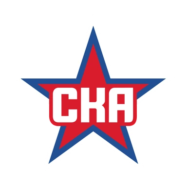

Ак Барс — Динамо Москва итог матча 17 ноября
Статистика матча
- 29Броски в створ34
- 0 из 2Голы в большинстве1 из 1
- 4Штрафные минуты2
- 2Удаления1
- 30Выигранные вбрасывания22
- 66 %Владение шайбой34 %
- 27Входы в зону атаки28
Удаления по минутам 3
- 1-й период
- Марченко Алексей №53Подножка2 мин
- 2-й период
- Евсеев Никита С. №44Задержка соперника клюшкой2 мин
- 3-й период
- Подъяпольский Владислав №59Блокировка2 мин
Данные лиги.
- ТурнирКХЛ
Коротко о матче
Ак Барс — Динамо Москва 2:4: гости победили.
По форме разница была заметной: в пяти последних матчах Динамо Москва — 4 победы, Ак Барс — 2 победы. Слабое место — оборона: Ак Барс — в среднем 3,2 пропущенной шайбы за игру в этих пяти матчах.
Матчи этих команд обычно скупы на голы: больше 5,5 шайб — лишь в 5 из 16 последних. Стоит учесть и площадку: дома Ак Барс — 3 победы в 10 матчах, на выезде Динамо Москва — 5 побед в 10. До этого команды встречались 20 марта 2026 года: Динамо Москва — Ак Барс 5:7.
Отдых и дорога
У хозяев 2 дня отдыха, у гостей 1 день отдыха.
Ак Барсхозяева
- 2дня отдыха
- 3матча за 7 днейвключая этот
- 1-йдомашний матч подряд
- 700км перелётразница во времени −2 ч
Прошлый матч: 14.11, Автомобилист — Ак Барс 5:1
 Динамо Москвагости
Динамо Москвагости
- 1день отдыха
- 3матча за 7 днейвключая этот
- 6-йвыездной матч подряд
- 2 100км перелётразница во времени −4 ч
Прошлый матч: 15.11, Сибирь — Динамо Москва 1:3
Перелёт — по прямой между городами прошлого и этого матча. Время отдыха считаем от начала прошлого матча.
Форма: последние матчи
Ак Барс 2 победы из 5
 П1:3
П1:3 П3:5
П3:5 В5:2
В5:2- В4:1
 П1:5
П1:5
Динамо Москва 4 победы из 5
 В4:0
В4:0 В3:2
В3:2- П3:4

В2:1- В3:1
Кто в форме
Больше всего очков (голы + передачи) в последних матчах команды.
Ак Барсза 5 последних матчей
| Игрок | Г | П | О |
|---|---|---|---|
| Терехов Семён | 2 | 2 | 4 |
| Хмелевский Александр | 2 | 2 | 4 |
| Денисенко Григорий | 1 | 3 | 4 |
| Бывальцев Алексей | 1 | 2 | 3 |
| Стась Андрей | 1 | 2 | 3 |
Динамо Москваза 5 последних матчей
| Игрок | Г | П | О |
|---|---|---|---|
| Ожиганов Игорь | 2 | 2 | 4 |
| Швец-Роговой Артём | 1 | 3 | 4 |
| Зуган Дмитрий | 3 | 0 | 3 |
| Летунов Максим | 2 | 1 | 3 |
| Коростелёв Никита | 1 | 2 | 3 |
Дома и в гостях
Хозяева — в своих домашних матчах, гости — в выездных. Регулярный чемпионат этого сезона.
| Ак Барсдома | ||
|---|---|---|
| Матчей | 15 | 15 |
| Побед | 7 из 15 | 7 из 15 |
| Забивают за игру | 2,3 | 2,3 |
| Пропускают за игру | 2,3 | 2,3 |
| Тотал больше 5,5 | 20% | 27% |
| Доходили до овертайма | 27% | 27% |
Жирным — лучшее из двух. Овертайм — с буллитами.
Вратари
Цифры за сезон. Кто выйдет в старте, клубы обычно объявляют только перед игрой.
Ак Барс
| Вратарь | И | Отражено | Пропуск. | На ноль |
|---|---|---|---|---|
| Билялов Тимур №82 | 17 | 91,7% | 2,30 | 1 |
| Арефьев Максим №20 | 12 | 91,8% | 2,42 | 0 |
Динамо Москва
| Вратарь | И | Отражено | Пропуск. | На ноль |
|---|---|---|---|---|
| Подъяпольский Владислав №59 | 18 | 91,3% | 2,26 | 1 |
| Моторыгин Максим №99 | 11 | 91,3% | 2,16 | 1 |
Отражено — доля отражённых бросков. Пропуск. — пропущено шайб в среднем за игру.
Личные встречи
- Динамо Москва5:7Ак Барс
- Ак Барс5:4Динамо Москва
- Динамо Москва5:6Ак Барс
- Ак Барс5:4Динамо Москва
Положение в таблице
| Команда | Место | И | В | П | Голы | Очки |
|---|---|---|---|---|---|---|
| Ак Барс | 9 | 29 | 13 | 16 | 67:73 | 28 |
| 7 | 29 | 13 | 16 | 65:72 | 31 |
Куда дальше
Материалы носят информационный характер и не гарантируют результат. Реклама букмекеров на сайте не размещается. Сайт только для совершеннолетних (18+).